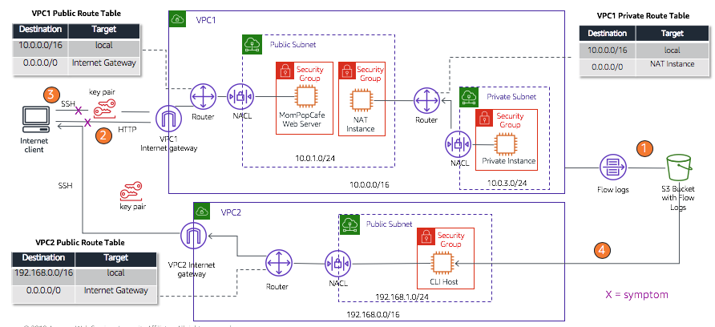

This activity provides you an opportunity to practice using VPC Flow Logs and to practice troubleshooting Amazon VPC configurations. The activity provides a starting environment that includes two VPCs as shown in the diagram below.
This diagram shows the four, numbered orange circles (#1-4) that indicate the order in which you will work though this activity.

Those tasks include:
Create an Amazon Simple Storage Service (Amazon S3) bucket to hold the flow logs, and then you enable VPC Flow Logs on VPC1.2.
This task includes two parts, which are labeled #2 and #3 on the diagram, and these parts are where you will:
Troubleshoot the symptoms that you experience after you start the activity. They are depicted with a red X on the diagram. However, keep in mind that symptoms and root cause are different things.
Download the flow logs to the CLI Host, and analyze the log entries. Some of the actions you took during troubleshooting will be reflected in the flow logs.
Duration
This activity will require approximately 75 minutes to complete.
After completing this activity, you will be able to:
There is a new request from the Café leadership team.
Some changes were recently made to the configuration of the VPC where the Café web server runs. While the changes were well-intentioned—and meant to improve the network security of the Cafe's deployment—some issues were not discovered until customers started to complain that they could not access the website. When Nikhil and Sofîa went to investigate the problem, they quickly discovered that they could not establish a Secure Shell (SSH) connection to the web server, which is on an Amazon Elastic Compute Cloud (Amazon EC2) instance. Because they cannot connect to the web server, they also cannot diagnose any misconfigurations that might exist on the EC2 instance. Sofîa and Nikhil think that there must be some fundamental networking misconfiguration they must fix.
Martha and Frank are not happy. They want this issue resolved as soon as possible. In this activity, you take on the role of Nikhil and Sofîa, and do your best to resolve the issues.
Please note, that the outcome of this lab might be affected by an active VPN connection.
At the top of these instructions, click Start Lab to launch your lab.
A Start Lab panel opens displaying the lab status.
Wait until you see the message "Lab status: ready", then click the X to close the Start Lab panel.
In this task, you will connect to the existing Amazon Linux CLI Host EC2 instance that already has the AWS CLI installed on it. You will use Secure Shell (SSH) to connect to the instance.
Windows users should follow Task 1.1. Both macOS and Linux users should follow Task 1.2.
macOS/Linux users—click here for login instructions
These instructions are for Windows users only.
If you are using macOS or Linux, skip to the next section.
Read through the three bullet points in this step before you start to complete the actions, because you will not be able see these instructions when the Details panel is open.
Download needed software.
Open putty.exe
Configure PuTTY to not timeout:
30This allows you to keep the PuTTY session open for a longer period of time.
Configure your PuTTY session:
Click Yes, to trust the host and connect to it.
When prompted login as, enter: ec2-user
This will connect you to the EC2 instance.
These instructions are for Mac/Linux users only. If you are a Windows user, skip ahead to the next task.
Read through the three bullet points in this step before you start to complete the actions, because you will not be able see these instructions when the Details panel is open.
Open a terminal window, and change directory cd to the directory where the labsuser.pem file was downloaded.
For example, run this command, if it was saved to your Downloads directory:
cd ~/DownloadsChange the permissions on the key to be read only, by running this command:
xxxxxxxxxxchmod 400 labsuser.pemCopy and paste the IPv4 Public IP address for the CLI Host instance. To find it click on the Details drop down menu above these instructions you are currently reading, and then click Show.
Copy the CliHostIP value.
Return to the terminal window and run this command (replace <public-ip> with the actual public IP address you copied):
xxxxxxxxxxssh -i labsuser.pem ec2-user@<public-ip>Type yes when prompted to allow a first connection to this remote SSH server.
Because you are using a key pair for authentication, you will not be prompted for a password.
Discover the region in which the CLI Host instance is running:
xxxxxxxxxxcurl http://169.254.169.254/latest/dynamic/instance-identity/document | grep regionYou will use this region information in a moment.
Update the AWS CLI software with the credentials.
xxxxxxxxxxaws configureAt the prompts, enter the following information:
us-east-1 or eu-west-2.json
In this first task, you create an S3 bucket to hold the flow logs from VPC Flow Logs. Then you enable VPC Flow Logs on VPC1 to capture information about IP traffic between network interfaces in VPC1 to the flow logs. The flow logs will then be stored in the S3 bucket.
Create the S3 bucket that will hold the flow logs by using the following command:
xxxxxxxxxxaws s3api create-bucket --bucket flowlog#### --region <region> --create-bucket-configuration LocationConstraint=<region>In the command, replace #### with four random numbers and replace both occurrences of <region> with the region where the EC2 instances were created (for example, eu-west-2).
If the region is us-east-1, delete the --create-bucket-configuration LocationConstraint=<region> portion of the command before you run it.
Run the following command to get the VPC ID for VPC1, which you must have to enable VPC Flow Logs:
xxxxxxxxxxaws ec2 describe-vpcs --query 'Vpcs[*].[VpcId,Tags[?Key==`Name`].Value,CidrBlock]' --filters "Name=tag:Name,Values='VPC1'"Enable VPC Flow Logs on VPC1 by running the following command.
xxxxxxxxxxaws ec2 create-flow-logs --resource-type VPC --resource-ids <vpc-id> --traffic-type ALL --log-destination-type s3 --log-destination arn:aws:s3:::<flowlog####>In the command above, replace <flowlog####> with the actual bucket name. Also replace <vpc-id> with the actual VPC ID of VPC1. The VPC ID was returned by the describe-vpcs command that you ran. You can also find it by clicking Show in the Details drop down menu above these instructions.
If the command runs successfully, you should see that a FlowLogId and a ClientToken are returned.
Run the following command to confirm the flow log was created:
xxxxxxxxxxaws ec2 describe-flow-logsThe command output should show a single flow log was created with a FlowLogStatus of ACTIVE and a log destination that points to your S3 bucket.
Now that the flow log has been created, you can move on to the next task in this activity, which involves some troubleshooting. At the end of the activity, you will analyze the flow logs that will be generated by some of the actions that you take in Task 3.
In this task, you will analyze access to the web server instance and troubleshoot some networking issues. Recall that the Cafe web server instance runs in the public subnet in VPC1. Refer back to the diagram at the start of this activity to see details on how the network should be configured.
Copy the WebServerIP public IP address. You can find it by clicking Show in the Details drop down menu above these instructions.
Open a new browser tab, paste the IP address in the URL bar, and attempt to load the webpage.
After a few moments, the page fails to load, and you receive an ERR_CONNECTION_TIMED_OUT message. This is expected.
Leave this browser tab open so that you can return to it later.
In the terminal where you are connected to the CLI Host, run the following command to find details about the web server instance.
xxxxxxxxxxaws ec2 describe-instances --filter "Name=ip-address,Values='<WebServerIP>'"In the command above, replace <WebServerIP> with the actual WebServerIP address (which is available in the Details drop down menu above these instructions):
A large JavaScript Object Notation (JSON) document is returned, and it provides more details than you need for your troubleshooting.
Filter the results on the client side—by using the query parameter—to return only relevant details.
The following command will return only the state of the instance, the private IP address, the instance ID, the security groups that are applied to it, the subnet in which it runs, and the key pair name that is associated with it. (Again, replace <WebServerIP> with the actual WebServerIP address.)
xxxxxxxxxxaws ec2 describe-instances --filter "Name=ip-address,Values='<WebServerIP>'" --query 'Reservations[*].Instances[*].[State,PrivateIpAddress,InstanceId,SecurityGroups,SubnetId,KeyName]'The command results indicate that the instance is running, which is a good sign. The command also returned additional helpful information that you can use later in this activity.
Try to establish an SSH connection to the web server instance. To do this:
Disconnect your current SSH session with the CLI Host by entering exit.
Complete the steps appropriate for your operating system.
Windows users:
10.webservermacOS and Linux users:
-o ConnectTimeout=10 to the command.ssh -i labsuser.pem ec2-user@<WebServerIP> -o ConnectTimeout=10After 10 seconds, the attempt to connect via SSH also fails (you get an operation timed out or Connection timed out error). This is expected.
Try the connection again, but this time, use a 15 second timeout.
Tip for Windows users: in the PuTTY (inactive) window, right-click the word PuTTY, and choose Change Settings. Click Connection, then set the Seconds between keepalives to 15. Click Apply, then right-click the word PuTTY again, and choose Saved Sessions > webserver.
The connection fails again. This is expected.
Note that the output of the describe-instances command you ran a moment ago showed that the key pair to use to connect to the instance is named vockey. This is the same keypair as the labsuser key you downloaded (just given a different name), so you can eliminate an incorrect key pair as the issue.
Re-establish the SSH connection to the CLI Host instance:
ssh -i labsuser.pem ec2-user@CliHostIPec2-user.You should be successfully connected again to the CLI Host instance.
You have established that the web server instance is running. However, you cannot load the webpage that the web server instance should serve. You also cannot use SSH to connect to the web server instance, even though you are using the correct SSH key pair. What could the issue be?
Challenge yourself to conduct your investigation by only using AWS CLI programmatic access and avoid using the AWS Management Console.
Hints:
Hint #1: Use the nmap utility to check what ports are open on the web server EC2 instance. To do this, you must first install the utility on the CLI Host instance by running sudo yum install -y nmap. Then run nmap <WebServerIP>, where <WebServerIP> is the actual public IP address of the web server instance (you can find it by clicking Show in the Details drop down menu above these instructions). If nmap cannot find any open ports, could there be something else blocking access to the instance?
Hint #2: Check the security group details by using the aws ec2 describe-security-groups command. Reference the AWS CLI Command Reference documentation as needed.
describe-instances command that you ran also returned the security group ID.describe-security-groups command, analyze the resulting output. Do the security group settings that are applied to the web server EC2 instance look like they are allowing connectivity?Hint #3: Check the route table settings for the route table that is associated with the subnet where the web server is running.
Use the aws ec2 describe-route-tables command.
When you run the command, you might find it helpful to apply a filter like this example: --filter "Name=association.subnet-id,Values='<VPC1PubSubnetID>'"
Replace <VPC1PubSubnetID> with the actual subnet ID value, You can find it by clicking Show in the Details drop down menu above these instructions. The subnet ID value was also returned when you ran the describe-instances command.
Hint #4: When you analyze the output of the describe-route-tables command, recall that the subnet is labeled as public.
aws ec2 create-route command. See the AWS CLI Command Reference documentation for details.describe-route-tables command earlier.aws ec2 describe-internet-gateways to get the gateway-id if you want. You might also need to specify other parameters to run the command successfully. The referenced documentation indicates which parameters are required.After you think you have solved the issue, return to the browser tab where you tried to load the web server page, and refresh the webpage. The http://WebServerIP page should display Hello from your web server! If you append /cafe/ to the end of the URL, you should see the cafe website.
Congratulations—you have resolved the issue that prevented you from accessing the website! However, another issue remains, and you will investigate this issue in the next section.
Disconnect your current SSH session with the CLI Host by entering exit.
Complete the steps appropriate for your operating system.
-o ConnectTimeout=10 to the command. Your command should look like this example (where xxxxx-xxxxxx are numbers and <WebServerIP> is the actual public WebServerIP address): ssh -i labsuser.pem ec2-user@<WebServerIP> -o ConnectTimeout=10After 10 seconds, the attempt to connect via SSH also fails (you get an operation timed out error). Again, this is expected.
What could be the remaining issue?
You already verified that the web server is running. You also know that you are using the correct SSH key pair to connect. You successfully created a route table entry to connect the subnet where the web server instance is running to the internet. You also verified that the security group allows connections on port 22, which is the default SSH port.
Hints:
Re-establish the SSH connection to the CLI Host instance.
Check the network access control list (network ACL) settings for the network ACL that is associated with the subnet where the instance is running. To do this, run the following command (replace <VPC1PublicSubnetID> with the actual subnet ID, which you can find by clicking Show in the Details drop down menu above these instructions):
xxxxxxxxxxaws ec2 describe-network-acls --filter "Name=association.subnet-id,Values='VPC1PublicSubnetID'" --query 'NetworkAcls[*].[NetworkAclId,Entries]'Analyze the output that results from running the command. Do any of the entries look like they might be causing the issue?
Use the delete-network-acl-entry command to delete any network ACL entries that might be causing an issue. Refer to the AWS CLI Command Reference documentation as needed.
After you think you have solved the issue, try to establish an SSH session from your computer to the web server instance again, and confirm that you can connect. If you can connect, you have successfully resolved the issue. To confirm that you are connected to the correct EC2 instance, run the hostname command after you are connected. It should indicate web-server as the hostname.
Congratulations—you have resolved the SSH access issue that prevented you from connecting to the web server!
You have resolved the network issues. While doing so, you created some interesting entries in the flow logs that you created when you enabled VPC Flow Logs at the beginning of this activity. In this final task, you will query the flow logs to observe the activities that they capture.
VPC Flow logs aggregation interval
The aggregation interval is the period of time during which a particular flow is captured and aggregated into a flow log record. By default, the maximum aggregation interval is 10 minutes. When you create a flow log, you can optionally specify a maximum aggregation interval of 1 minute. Flow logs with a maximum aggregation interval of 1 minute produce a higher volume of flow log records than flow logs with a maximum aggregation interval of 10 minutes.
After data is captured within an aggregation interval, it takes additional time to process and publish the data to CloudWatch Logs or Amazon S3. The flow log service typically delivers logs to CloudWatch Logs in about 5 minutes and to Amazon S3 in about 10 minutes. However, log delivery is on a best effort basis, and your logs might be delayed beyond the typical delivery time.
Reconnect to the CLI Host EC2 instance.
Create a local directory on the CLI Host where you can download the flow log files:
mkdir flowlogs
Change the directory to the new directory:
cd flowlogs
List the S3 buckets to recall the bucket name:
aws s3 ls
Download the flow logs by running the following command (replace <flowlog####> with the actual bucket name).
aws s3 cp s3://<flowlog####>/ . --recursive
If the command is successful, you should see that many files are downloaded.
Use the cd command and ls commands repeatedly (or cd followed by pressing TAB multiple times) as need. You must change the directory and move down into the folder structure that you downloaded. When you run ls, you should see all of the downloaded log files. The logs will be located in an AWSLogs/<account-num>/vpcflowlogs/<region>/yyyy/mm/dd subdirectory.
Notice that the file names all end in log.gz, which indicates that they are compressed as GNU zip files.
Run this command to extract the logs:
gunzip *.gz
Run ls again. Notice that all files are now extracted.
In this section of the activity, you will analyze the flow logs. Specifically, you will see if your failed SSH connection attempts were captured in the logs.
Analyze the structure of the logs. To do this:
ls command that you ran.head in the terminal window, followed by a space, and then paste the copied file name. Run the command.For further details, see the VPC Flow Log records documentation.
Run a grep command the looks in each log file in the current directory, and returns lines that contain the word REJECT:
xxxxxxxxxxgrep -rn REJECT .This command should return a large dataset because it includes every event where the VPC settings rejected the request.
Find out how many records were returned:
xxxxxxxxxxgrep -rn REJECT . | wc -lThe result shows the number of lines in your result set.
Refine your search by only looking for lines that contain 22 (which is the port number where you attempted to connect to the web server when access was blocked):
xxxxxxxxxxgrep -rn 22 . | grep REJECTThis command should return a smaller number of results.
To isolate the result set—so that it only displays the log entries that correspond to the failed SSH connection attempts that you made—you must filter the results further.
Recall that your failed attempts to use SSH to connect the web server were initiated from your local machine. In this next step, you will determine the IP address by which you local machine is addressable from the internet.
Find the IP address to which your local computer is addressable from the internet.
To do this:
Log in to the AWS Management Console.
Go to the EC2 service in the same Region where your EC2 instances are running.
Click Security Groups.
Click WebSecurityGroup and then click the Inbound rules tab.
Click Edit inbound rules, then click Add Rule.
In the third row that was just created, for Source, choose My IP.
Copy the IP address from the Classless Inter-Domain Routing (CIDR) block that is automatically populated (it will end in /32).
Copy only the IP address, not the /32 suffix.
Then, click Cancel. You do not need to modify any security groups in this account. The purpose of this step is to capture this IP address.
Back in the CLI Host SSH terminal session, run a more refined query on the flow logs (replace <ip-address> with the IP address that you copied):
xxxxxxxxxxgrep -rn 22 . | grep REJECT | grep <ip-address>The number of lines in the result set should now match the number of times you tried and failed to use SSH to connect the web server instance. If no entries are returned, go back to step 42 and repeat the steps. VPC flow logs aggregation interval has a default setting of 10 minutes, followed by another 10 minute delivery interval to Amazon S3.
Notice that the elastic network interface ID is in each of the log entries that were returned by your query.
Run the following command (replace <WebServerIP> with the actual IP address):
xxxxxxxxxxaws ec2 describe-network-interfaces --filters "Name=association.public-ip,Values='<WebServerIP>'" --query 'NetworkInterfaces[*].[NetworkInterfaceId,Association.PublicIp]'The result set should confirm that the network interface ID that is recorded in the flow log matches the network interface that is assigned to the web server instance (as part of the network interface).
Translate the timestamps to human-readable form.
Notice the two long numbers that appear towards the end of each log entry, before the REJECT term.
These numbers are Unix-formatted timestamps.The first timestamp indicates the start time of each event that was captured. The second timestamp indicates the end time. You can convert them to human-readable form by using the Linux date command line utility. For example, if the timestamp is 1554496931, then you would run the following command:
xxxxxxxxxxdate -d @1554496931Run the date -d @ command for one of the captured timestamps from one of the filtered REJECT results. It should indicate a time from today that corresponds with when you were working through this activity. Run the date command to compare the result to the current time.
Using grep is a powerful but basic way to pull meaningful data out of VPC Flow Log files. The market offers many tools for running reports or generating analytic dashboards from logs. One solution is to use the Amazon Athena service. Amazon Athena enables you to ingest logs so that they become data in a database table. You can then run structured query language (SQL) queries to extract meaningful information from the logs. You can read more about Amazon Athena here.
Congratulations! You have completed the activity.
Click End Lab at the top of this page and then click Yes to confirm that you want to end the activity.
A panel will appear, indicating that "DELETE has been initiated... You may close this message box now."
Click the X in the top right corner to close the panel.
For more information about AWS Training and Certification, see https://aws.amazon.com/training/. Your feedback is welcome and appreciated. If you would like to share any suggestions or corrections, please provide the details in our AWS Training and Certification Contact Form. © 2022 Amazon Web Services, Inc. and its affiliates. All rights reserved. This work may not be reproduced or redistributed, in whole or in part, without prior written permission from Amazon Web Services, Inc. Commercial copying, lending, or selling is prohibited.